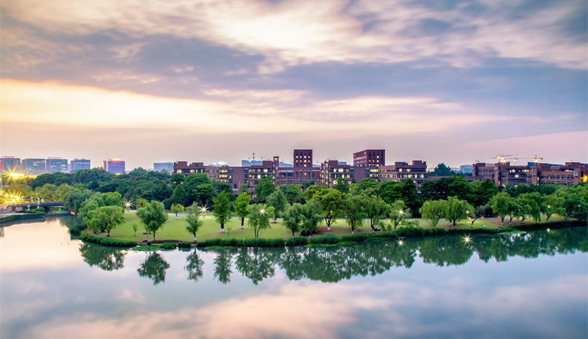

About Zhejiang University
Located in the historical and picturesque city of Hangzhou, Zhejiang University is a prestigious institution of higher education with a long history. Qiushi Academy, the predecessor of Zhejiang University, was founded in 1897 and was one of the earliest modern academies of higher learning established in China. In its 120-year history, Zhejiang University has always been committed to cultivating talent with excellence, advancing science and technology, serving for social development, and promoting culture, with the spirit best manifested in the university motto “Seeking the Truth and Pioneering New Trails”
Zhejiang University is a comprehensive research university with distinctive features and a national as well as international impact. Research at Zhejiang University spans 12 academic disciplines, covering philosophy, economics, law, education, literature, history, art, science, engineering, agriculture, medicine, management and etc. With 7 faculties and 36 colleges/schools/departments, 1 polytechnic institute, Zhejiang University has 14 primary and 21 secondary national leading academic disciplines.

Zijingang Campus

Zijingang Campus Overview
ZJU focuses on assiduous study and research, and science and technological innovation. It has launched a number of international high-end academic platforms and gathered masters, scholars and high-level research teams in various disciplines. In recent years, ZJU maintains a leading position in China in output indicators including publications, patents and etc., and has made abundant important achievements in science, technology, humanities and social sciences. In 2016, research fund at ZJU amounted to 3.518 billion yuan.
As of Dec. 2016, there are 48,762 full-time students enrolled at ZJU, including approximately 15,092 graduate students, 9,537 Ph.D candidates. There are 6,237 international students currently attending ZJU. With seven campuses, namely Zijingang, Yuquan, Xixi, Huajiachi, Zhijiang, Zhoushan and Haining campus, with buildings covering 2.5 million square meters of floor space. The university library holds 6.9 million volumes book collections.
As a national university standing by River Qiantang, ZJU is striving to build itself into an innovative comprehensive research university with a world-class status. ZJU will be adhering to the spirit of seeking the truth and pioneering new trails, dedicating itself to creating and disseminating knowledge, inheriting and advancing civilization, serving and leading the society, and promoting national prosperity, social development and human progress.
You can learn more about Zhejiang University in the follow video.